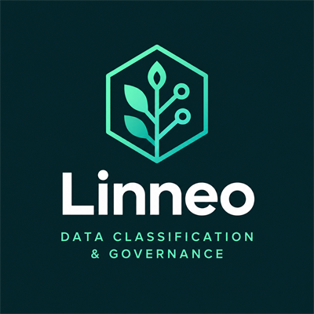

Edición HTML en español Curso de Linneo
Este curso enseña a usar Linneo, una biblioteca Java que lleva una taxonomía de clasificación de datos al código fuente. Recorre todas sus herramientas, desde la anotación de un modelo de datos y su verificación en los tests hasta el registro de actividades de tratamiento del RGPD, la categoría de seguridad del ENS y la publicación en catálogos de datos, con ejemplos ejecutados sobre un caso práctico completo.
Presentación
Saber qué contiene cada campo de un modelo de datos es el punto de partida de casi todas las obligaciones de protección de datos y de seguridad de la información: el registro de actividades de tratamiento, la evaluación de impacto, la notificación de una brecha, el enmascaramiento de los logs o el control de acceso. Linneo mantiene ese conocimiento junto al código que describe y hace que la compilación falle cuando ambos se separan.
El curso sigue un caso práctico de principio a fin: el modelo de datos de una pequeña universidad, con sus estudiantes, matrículas, calificaciones, personal y documentos, y las actividades de tratamiento que los usan. Cada capítulo añade una pieza al caso y la explica con ejemplos de código cuyas salidas son las reales de la biblioteca.
Esta edición corresponde a la versión 0.1.0 de Linneo.
A quién va dirigido
El curso está escrito para dos perfiles que trabajan juntos:
- Desarrolladores Java que mantienen aplicaciones con datos de personas y deben declarar qué contiene cada campo, verificarlo y usar el resultado.
- Delegados de protección de datos, responsables de seguridad y responsables de gobierno del dato que necesitan entender qué expresa la clasificación, cómo leer sus resultados y qué parte de la información les corresponde aportar.
No hace falta seguir el curso entero. La tabla siguiente propone un itinerario para cada perfil.
| Perfil | Capítulos esenciales | Capítulos complementarios |
|---|---|---|
| Desarrollo Java | 1 a 8, 11 y 18 | 9 y 10 si la organización amplía la taxonomía; 16 y 17 según las herramientas que use |
| Delegado de protección de datos | 1, 2, 3, 11, 12, 13, 14 y 18 | 7 y 8, para entender el inventario y las decisiones de visibilidad |
| Seguridad de la información y ENS | 1, 2, 7, 13 y 15 | 16, para el enmascaramiento de las copias de bases de datos |
| Gobierno del dato y arquitectura | 1, 3, 8, 9, 10 y 17 | 16, para las API y los contratos de datos |
Requisitos previos
- Java 21 o posterior, y Maven o Gradle. Linneo no tiene dependencias en tiempo de ejecución.
- JUnit 5, u otro marco de tests, para los capítulos que verifican el modelo y las actividades.
- Conocimientos prácticos de anotaciones, records y herencia en Java. Conocer JPA ayuda, pero no es necesario.
- Para los perfiles de protección de datos, familiaridad con los conceptos básicos del RGPD. El capítulo 2 repasa los que usa la biblioteca.
Cómo usar este curso
Cada capítulo empieza con sus objetivos de aprendizaje y una ficha con la duración estimada. El contenido alterna explicaciones, ejemplos numerados y recuadros de cinco tipos, identificados siempre por su título:
- Nota
- Información complementaria que ayuda a entender el contexto.
- Consejo
- Una práctica recomendada.
- Importante
- Algo que conviene no pasar por alto.
- Atención
- Un comportamiento que hace fallar la compilación o que puede reducir la protección de los datos.
- Protección de datos
- Notas pensadas para el delegado de protección de datos.
Al final de cada capítulo hay una lista de errores frecuentes, un resumen, ejercicios con su solución y una autoevaluación con las respuestas razonadas. Las soluciones y las respuestas están en bloques desplegables: intenta resolver cada ejercicio antes de abrirlas.
Para hacer los ejercicios, crea un proyecto con Java 21, añade Linneo y JUnit 5 y crea el paquete
edu.example.university. El capítulo 1 explica la instalación.
Contenido del curso
Los dieciocho capítulos se agrupan en cinco partes, seguidas de dos anexos de consulta.
Parte I. Fundamentos
Capítulo 1. Qué es Linneo
Qué problema resuelve Linneo, qué principios lo guían, cómo se organizan sus paquetes y un primer recorrido completo, de la anotación al registro.
Duración estimada: 45 minutos
Capítulo 2. Naturaleza jurídica y protección
Qué es un dato según el RGPD, cuánto daño causaría revelarlo o alterarlo, cómo se guarda y cómo compara Linneo protecciones.
Duración estimada: 60 minutos
Capítulo 3. La taxonomía
De dónde vienen los términos, cómo se organizan en tres jerarquías, cómo viaja la protección y cómo se consulta la taxonomía.
Duración estimada: 75 minutos
Parte II. Clasificar el modelo de datos
Capítulo 4. Anotar campos y clases
Declara qué contiene cada campo con @Category, @DefaultCategory y @Exempt: niveles, identificabilidad, herencia, records y elección de la clave.
Duración estimada: 90 minutos
Capítulo 5. Filas, derivados, compuestos y referencias
Clasifica campos cuya categoría cambia por fila, valores calculados, objetos embebidos, referencias a otros registros y tipos que el clasificador no ve.
Duración estimada: 90 minutos
Capítulo 6. Verificar en los tests
Convierte las anotaciones en un control de la compilación: Classifier, classify y verify, cada infracción con su mensaje real, avisos y ModelClasses.
Duración estimada: 75 minutos
Capítulo 7. Usar la clasificación
Lee el resultado del clasificador, calcula la protección de campos y clases, prepara informes y decide qué mostrar, enmascarar u omitir.
Duración estimada: 75 minutos
Capítulo 8. El inventario de datos
Convierte la clasificación del modelo en un inventario de datos que se guarda, se compara con la copia guardada y alimenta catálogos y actividades.
Duración estimada: 75 minutos
Parte III. Gobernar la taxonomía
Capítulo 9. Ampliar la taxonomía
Cómo añadir términos propios y endurecer la protección con TaxonomyBuilder y TaxonomyExtension, y cómo usar las cinco extensiones incluidas.
Duración estimada: 90 minutos
Capítulo 10. Versiones de la taxonomía
Guardar la taxonomía como texto, identificarla con su huella, comparar dos versiones y graduar el cambio con las reglas de versionado.
Duración estimada: 60 minutos
Parte IV. Cumplimiento normativo
Capítulo 11. Actividades de tratamiento
Declara las actividades de tratamiento con sus bases jurídicas y su gobernanza, y compruébalas con ProcessingChecker en cada compilación.
Duración estimada: 100 minutos
Capítulo 12. El registro de actividades
Genera el registro del artículo 30 en Markdown y JSON, compara dos versiones con RecordDiff y llévalo a la aprobación del DPD.
Duración estimada: 75 minutos
Capítulo 13. Evaluación de impacto y brechas
Cribar si una actividad necesita una evaluación de impacto con ImpactScreening y orientar la gravedad de una brecha con BreachAssessment.
Duración estimada: 75 minutos
Capítulo 14. Derechos de los interesados
Empezar la respuesta a quien ejerce sus derechos con SubjectRights: qué actividades tratan sus datos, dónde están y qué derechos da cada base jurídica.
Duración estimada: 60 minutos
Capítulo 15. Categoría ENS del sistema
Calcular la categoría de un sistema según el Esquema Nacional de Seguridad con EnsCategorization, desde la clasificación y lo que declara su responsable.
Duración estimada: 45 minutos
Parte V. Integración y práctica
Capítulo 16. Exportar a PostgreSQL, OpenAPI y ODCS
Publica la clasificación en reglas de PostgreSQL Anonymizer, en la extensión x-linneo de OpenAPI y en el esquema de un contrato ODCS.
Duración estimada: 75 minutos
Capítulo 17. Catálogos de datos
Publicar la taxonomía y la clasificación de cada columna en OpenMetadata, DataHub y Apache Atlas, y mantener las etiquetas al día.
Duración estimada: 100 minutos
Capítulo 18. Linneo en el ciclo de vida
Cómo se integra Linneo en el trabajo diario: tests en la integración continua, revisión de cambios, actualizaciones de la taxonomía, colaboración con el DPD y límites de la herramienta.
Duración estimada: 60 minutos
Anexos
Anexo A. Referencia rápida
Referencia rápida de Linneo: módulo y paquetes, anotaciones, problemas del clasificador, puntos de entrada de la API, enumerados, códigos del comprobador y recetas.
Duración estimada: Consulta
Anexo B. Glosario
Definiciones breves de los términos técnicos de Linneo y de los conceptos jurídicos y de seguridad que usa, con enlace al capítulo que los explica.
Duración estimada: Consulta
Accesibilidad
Estas páginas se han diseñado para cumplir las Pautas de Accesibilidad para el Contenido Web (WCAG) 2.2, nivel AA:
- Todas las páginas comparten la misma estructura: un enlace para saltar al contenido principal, una cabecera, la lista de capítulos (en pantallas anchas), el contenido y un pie. La navegación aparece siempre en el mismo orden.
- Los encabezados siguen una jerarquía sin saltos, y cada capítulo tiene un índice propio al principio.
- Todo se puede usar con el teclado. El foco se muestra con un fondo amarillo de alto contraste. Los bloques de código y las tablas anchas reciben el foco para poder desplazarlos con las flechas.
- El texto alcanza un contraste de al menos 4,5:1 con su fondo, tanto en el tema claro como en el oscuro, que se elige según la preferencia del sistema.
- El contenido se adapta a una pantalla de 320 píxeles de ancho y a una ampliación del 400 % sin desplazamiento horizontal de la página; solo los bloques de código y las tablas anchas se desplazan dentro de su propio recuadro. Las páginas respetan el espaciado de texto que configure el usuario.
- Los recuadros se identifican por su título, no solo por el color. Las tablas tienen título y encabezados asociados. Las abreviaturas se expanden la primera vez que aparecen en cada capítulo.
- Las páginas no usan JavaScript, animaciones ni contenido que se mueva.
Si encuentras una barrera de accesibilidad, comunícala en las incidencias del proyecto en GitHub, indicando la página y, si es posible, el navegador y la tecnología de apoyo que usas.
Licencia y créditos
Linneo y este curso se distribuyen con la licencia Apache, versión 2.0. La biblioteca incluye la taxonomía por
defecto de fideslang, de Ethyca, Inc., con licencia CC BY 4.0. El nombre de la biblioteca recuerda a Carl Linnaeus
(Carl von Linné), cuya taxonomía clasificó los seres vivos en una jerarquía de rangos: Linneo hace lo mismo con los
datos, y cada clave con puntos, como user.contact.email, nombra el camino desde la raíz.
Empieza por el capítulo 1, Qué es Linneo.